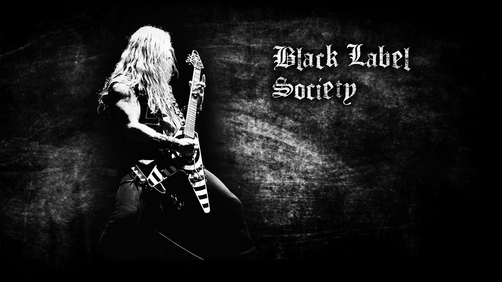
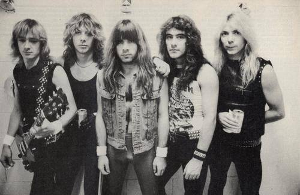

Skid Row
Skid Row es una banda de heavy metal estadounidense fundada en 1986 por el bajista Rachel Bolan y el guitarrista Dave "The Snake" Sabo en Toms River, Nueva Jersey. Para completar su formación, tras sufrir varios cambios, Bolan y Sabo reclutaron al guitarrista Scotti Hill, al baterista Rob Affuso y por último al vocalista Sebastian Bach. Skid Row alcanzó la fama con su álbum debut, llamado de manera homónima y que alcanzó la sexta posición en el Billboard 200.
Cabe señalar que el nombre de la banda fue tomada de la banda irlandesa Skid Row, de donde pertenecía el guitarrista Gary Moore, quien cobró 35 mil dólares por concepto de derechos de autor y a quien al momento de firmar con Atlantic Records los estadounidenses pagaron esa cifra para su uso.
Primeros años
La agrupación se formó en 1986 en Toms River, Nueva Jersey. Su formación inicial consistía en Matt Fallon (voz), Dave "The Snake" Sabo, Scotti Hill (guitarras), Rachel Bolan (bajo) y Rob Affuso (batería). Más tarde se uniría a la agrupación el vocalista Sebastian Bach, reemplazando a Fallon. La banda empezó tocando en clubes en el Este de los Estados Unidos. Asistido por su amigo Jon Bon Jovi, Sabo aseguró un contrato para Skid Row con la productora Atlantic Records en 1988, cuando entraron al estudio con Michael Wagener (productor de Ozzy Osbourne, White Lion y Extreme, entre otros) para grabar su primer disco.
Skid Row, lanzado en enero de 1989, fue un éxito instantáneo. Produjo los reconocidos singles «18 and Life», «I Remember You», y «Youth Gone Wild». La banda se vio envuelta también en algunos incidentes, entre ellos la disputa legal por regalías al mencionado Jon Bon Jovi y al guitarrista Richie Sambora. A pesar de las peleas legales con Bon Jovi, el disco fue el más vendido de Skid Row con 5 millones de copias solo en Estados Unidos, siguiendo el prototipo de las bandas de glam metal de la época, aunque con un sonido ligeramente más pesado.

Black Label Society
Black Label Society es una banda norteamericana de heavy metal formada por el guitarrista Zakk Wylde en 1998, la banda ha editado nueve álbumes de estudio.
A principios de los noventa, Wylde formaba parte de la banda Pride & Glory, después de un año y un solo álbum la banda se disolvió en 1994. Wylde editaría un álbum solista acústico Book of Shadows en 1996. Tras el poco éxito del álbum en solitario, Wylde y el baterista Phil Ondich grabarían lo que posteriormente sería el álbum debut de Black Label Society Sonic Brew junto con el guitarrista Nick Catanese y el bajista John DeServio. Sonic Brew fue grabado en Japón en octubre de 1998, salió a la venta en mayo de 1999.

Iron Maiden
Iron Maiden es una banda británica de heavy metal fundada en 1975 por el bajista Steve Harris. Es considerada una de las bandas de heavy metal más importantes de todos los tiempos. Ha vendido más de 100 millones de discos en todo el mundo, a pesar de haber contado con poco apoyo de la radio y la televisión comercial durante la mayor parte de su carrera. Sin embargo, la banda basó su éxito en llegar directamente a los aficionados, grabando discos de alta calidad y realizando actuaciones al vivo consideradas de las mejores del género.
Iron Maiden ganó el Premio Ivor Novello para el logro internacional en 2002, y fueron incluidos en el Hollywood's RockWalk en Sunset Boulevard, Los Ángeles, en 2005. Para agosto de 2011, la banda ha tenido casi 2.000 presentaciones en vivo a lo largo de su carrera. También en 2009 fue ganadora del premio Mejor Performance en Vivo en los BRIT Awards, la más importante premiación musical del Reino Unido.
Durante sus más de 30 años de trayectoria, Iron Maiden ha sido identificada gráficamente por su famosa mascota "Eddie the Head", quien ha aparecido en todas las portadas de sus álbumes y en casi todos sus singles, así como en sus presentaciones en vivo.
Tras varias audiciones y varios cambios en su formación, ésta finalmente se consolidó con el vocalista Paul Di'Anno, los guitarristas Dave Murray y Dennis Stratton y el baterista Clive Burr, siempre bajo el liderazgo del bajista Steve Harris. Tras varias giras por todo el Reino Unido lanzan su primer EP llamado The Soundhouse Tapes en 1979 y ya en 1980 su álbum debut homónimo en 1980 el cual llegó al número cuatro de las lista británicas sin mediar promoción masiva alguna. Más tarde ese mismo año, Stratton fue reemplazado por el guitarrista Adrian Smith, con el que publicaron el exitoso y consistente Killers (1981).1 Luego, el cantante Bruce Dickinson entró a reemplazar a Di'Anno para el álbum The Number of the Beast de 1982, marcando el inicio de una serie de lanzamientos de impacto, entrando en lo más alto en las listas del Reino unido.2 . Para el año 1983 la banda lanzó el álbum Piece of Mind, que contaba como novedad con la salida del baterista Clive Burr y el ingreso de Nicko McBrain en su reemplazo. A partir de allí se consolidó la alineación más estable y exitosa que ha tenido la agrupación, la cual dio para numerosas giras y álbumes. Iron Maiden ha grabado 15 álbumes de estudio.